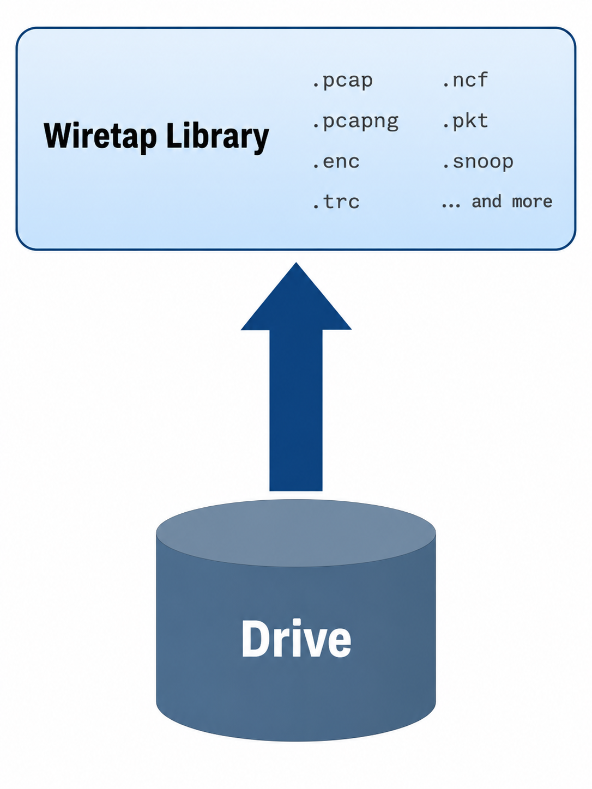
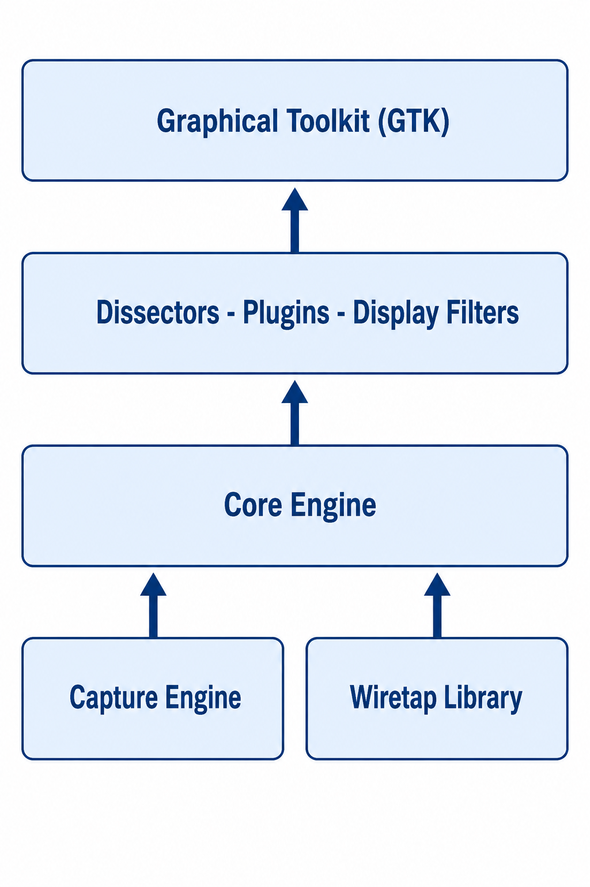
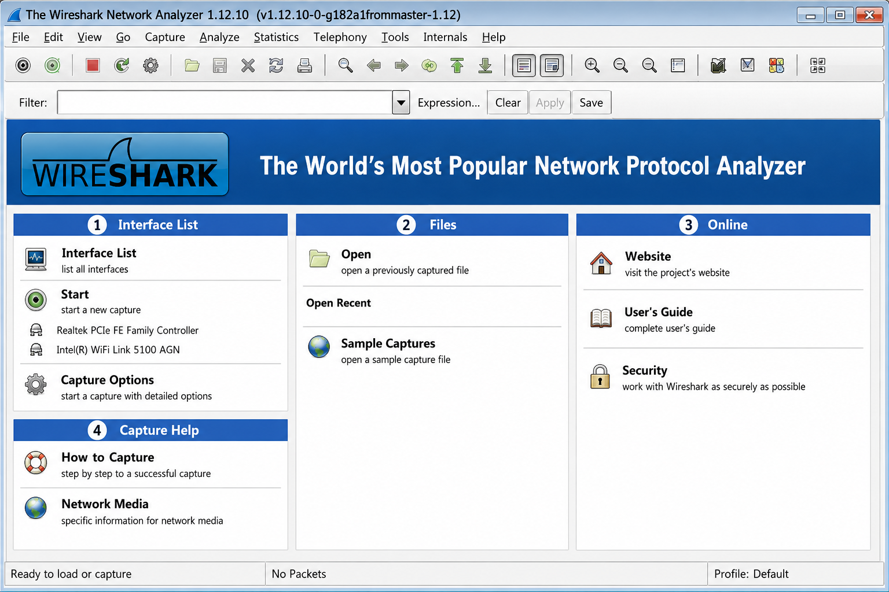
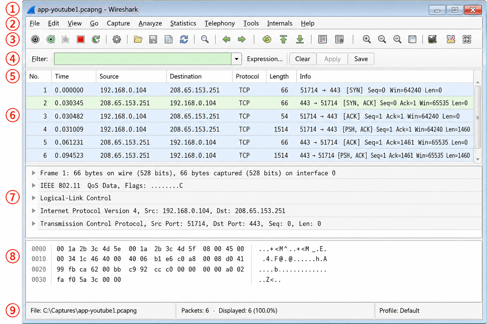
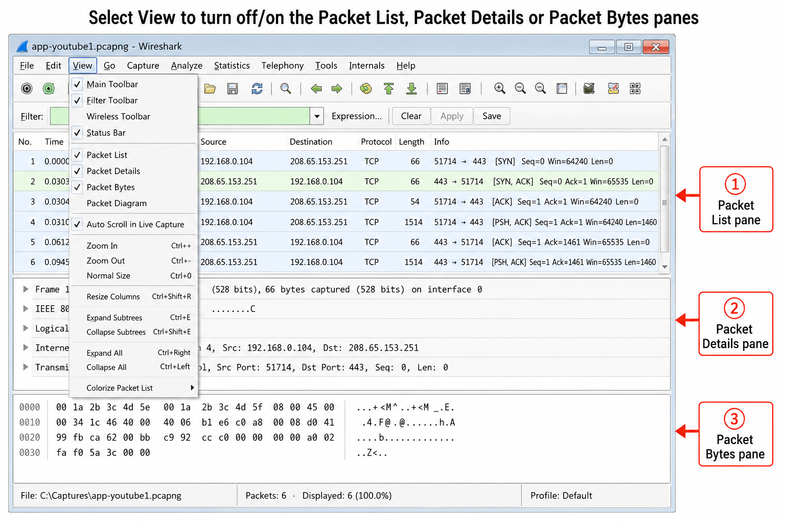
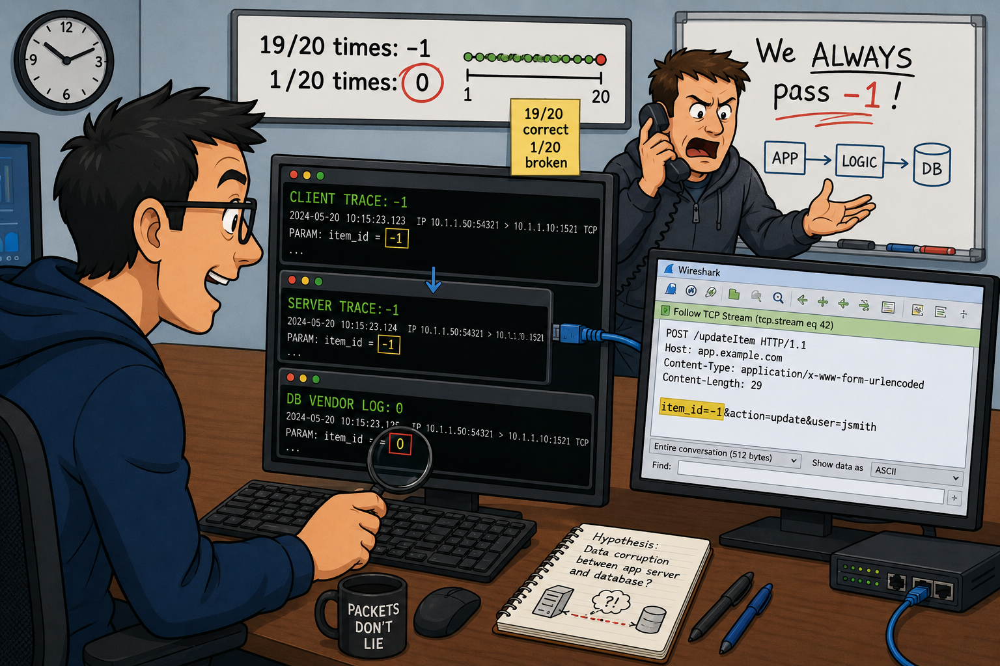

Gerald Combs created Wireshark because commercial analyzers cost $5,000–$20,000 and his employer limited him to tcpdump and snoop. tcpdump already existed as an open-source tool when he started. Why build an entirely new GUI application instead of improving tcpdump — and what does that design choice reveal about where the real gap in network analysis tooling was?
Wireshark Creation and Maintenance
Wireshark is the world's most popular network analyzer. Available for free to all as an open source tool, Wireshark runs on a variety of platforms and offers the ideal "first responder" tool for IT professionals.
In 1997, the analysis world was dominated by commercial network analyzers that ranged in price from $5,000 to $20,000. The cost was prohibitive to most business and information technologists. Gerald Combs was one of these technologists who felt the budget constraints of the expensive commercial tools. Prior to creating Ethereal, Gerald Combs was lugging around a Sniffer portable at the University of Missouri in Kansas City. The budget issues at his next job at a small Internet service provider limited his tools to tcpdump and snoop. He decided to create his own network analyzer program.
Gerald Combs originally released his network analyzer program under the name Ethereal (version 0.2.0) on July 14, 1998, although Gerald's original development notes are dated several months earlier (late 1997). When Gerald began working with CACE Technologies in June 2006, trademark ownership issues of the name Ethereal forced the development efforts to move to the new name, Wireshark. CACE Technologies was purchased by Riverbed Technology in 2010.
Wireshark is maintained by an active community of developers from all over the world. For more information on the Wireshark developers, see Thanks to the Wireshark Developers or select Help | About Wireshark | Authors from the Main Menu. Currently there are approximately 700 developers credited with building and enhancing Wireshark. There are between 10 and 20 active developers at any given time.
Obtain the Latest Version of Wireshark
Wireshark is available for numerous operating systems including Windows, Apple Mac OS X, Debian GNU/Linux, FreeBSD, Gentoo Linux, HP-UX, Mandriva Linux, NetBSD, OpenPKG, Red Hat Fedora/Enterprise Linux, rPath Linux, Sun Solaris/i386, Sun Solaris/Sparc and Ubuntu. Visit www.wireshark.org/download.html to locate the appropriate version for your operating system. Wireshark is released under the GNU GPL (General Public License).
Compare Wireshark Release and Development Versions
The most recent stable version of Wireshark is available at www.wireshark.org/download.html while recent development release versions can be found at www.wireshark.org/download/automated.html. The version number used for stable releases contain an even number after the first decimal point (such as 1.6.x and 1.8.x) while development release version numbers contain an odd number after the decimal point (such as 1.5.x and 1.7.x). In addition, "SVN" in the title indicates the release subversion number.
Thanks to the Wireshark Developers!
Currently there are approximately 700 developers credited with building and enhancing Wireshark. Wireshark contains 2,272,715 lines of code (LoC) and has taken 668.96 person-years to develop at an estimated development cost of $90,367,829. Bug tracking is at bugs.wireshark.org/bugzilla. Bugs can be reported on the Wireshark GUI, Tshark, Dumpcap, Editcap, Mergecap, Capinfos, Text2pcap and other related utilities.
WinPcap, libpcap, and AirPcap are all described as "link-layer interfaces" but they are not interchangeable. What determines which one is used — and crucially, why does Wireshark need a completely separate library (the Wiretap Library) just to OPEN saved trace files when these capture drivers already handle raw packets?
Capture Packets on Wired or Wireless Networks
When Wireshark is connected to a wired or wireless network, traffic is processed by either the WinPcap, AirPcap or libpcap link-layer interface, as illustrated in Figure 11.

Libpcap
The libpcap library is the industry standard link-layer interface for capturing traffic on *NIX hosts. Information regarding patches related to libpcap can be found at www.tcpdump.org.
WinPcap
WinPcap is the Windows port of the libpcap link-layer interface. WinPcap consists of a driver that provides the low-level network access and the Windows version of the libpcap API (application programming interface). Visit www.winpcap.org for more information on WinPcap and WinPcap-capable utilities.
AirPcap
AirPcap is a link-layer interface and network adapter used to capture 802.11 traffic on Windows operating systems. AirPcap adapters operate in passive mode to capture WLAN data, management and control frames. Visit www.riverbed.com/us/products/cascade/airpcap.php for more information on AirPcap adapters.
Open Various Trace File Types
WinPcap, AirPcap and libpcap interfaces are not used when opening trace files. Opened trace files are processed through the Wireshark Wiretap Library as illustrated in Figure 12.
The Wiretap Library lets Wireshark open dozens of trace file formats from competing products. From a practical standpoint, why would an organization ever need to open a trace file from a competing product rather than just recapturing the traffic themselves?
Open Various Trace File Types

The Wireshark Wiretap Library enables Wireshark to read a variety of trace file formats including:
- Wireshark/tcpdump-libcap
- Microsoft NetMon
- Endace ERF capture
- AIX tcpdump-libcap
- Network General Sniffer
- TamoSoft CommView
- RedHat 6.1 tcpdump-libcap
- NI Observer, Shomiti/Finisar Surveyor
- SuSE 6.3 tcpdump-libcap, Sun snoop
- WildPackets *Peek, and more
To view the entire list of trace file formats in the Wireshark Wiretap Library, launch Wireshark and select File | Open. Open the Files of Type drop-down list to see all supported formats. Try opening ftp-dir.enc — this trace file was saved by a host running an old DOS version of Network General's Sniffer product in the .enc format. Wireshark used the Wiretap Library to open that trace file.
Wireshark dissectors chain together — each one reads a type field and hands off to the next dissector. If you disable the UDP dissector in Analyze | Enabled Protocols, what happens to DNS and DHCP traffic, and why does this reveal something fundamental about how protocol layering actually works in Wireshark?
Understand How Wireshark Processes Packets
Trace files that are processed by libpcap, WinPcap or AirPcap or are opened up with the Wiretap Library are processed in the core engine as shown in Figure 13.
Core Engine
The core engine is described as the "glue code that holds the other blocks together." It coordinates the dissectors, plugins, display filters, and the graphical toolkit.
Dissectors and Plugins and Display Filters
Dissectors (also referred to as decodes), plugins (special routines for dissection) and display filters (used to define which packets should be displayed) are applied to the traffic at this time. Dissectors decode packets to display field contents and interpreted values.
When a packet comes in, Wireshark detects the frame type first and hands the packet off to the correct frame dissector (Ethernet, for example). After breaking down the contents of the frame header, the dissector looks for an indication of what is coming up next. For example, in an Ethernet header the value 0x0800 in the Type field indicates that IPv4 is coming up next. The Wireshark Ethernet dissector hands the packet off to the IP dissector. The IP dissector works its magic on the IP header and looks to the Protocol field in the IP header to identify the next portion of the packet. If the value is 0x06 (TCP), the IP dissector hands the packet off to the TCP dissector. This process continues until there are no further indications of another possible dissection.
GIMP Toolkit (GTK+)
GIMP GTK+ is the graphical toolkit used to create the graphical user interface for Wireshark and offers cross-platform compatibility. For more information on GTK+, visit www.gtk.org.
The Status Bar in Wireshark shows five distinct elements. If you were designing a training exercise for a new analyst opening a trace file for the first time, which single Status Bar element would you tell them to check first — and what would it immediately reveal about the capture without selecting any packet?
Use the Start Page
A Start Page was added to Wireshark when it reached version 1.2.0. There are four sections on the Start Page:
- Capture Area — Interface List link, Start link (begins capture after selecting interfaces), Capture Options link (opens Capture Options window to define capture filter, stop conditions, etc.)
- Files Area — Open, Open Recent list, and Sample Captures link
- Online Area — links to the main Wireshark website, User's Guide, and Security page
- Capture Help Area — links to the How to Capture page and Network Media page

Identify the Nine GUI Elements
When you open an existing trace file or begin a capture session, you are working in the main Wireshark window. There are nine distinct sections in the main Wireshark window:
- Title
- Menu (text)
- Main Toolbar (icons)
- Filter Toolbar
- Wireless Toolbar
- Packet List Pane
- Packet Details Pane
- Packet Bytes Pane
- Status Bar

Interpreting the Status Bar
The Status Bar at the bottom of the Wireshark window consists of five elements:
- Expert Info button — color coded: Red=Errors, Yellow=Warnings, Cyan=Notes, Blue=Chats, Green=Comments only (no expert items), Grey=No expert items. As of Wireshark 1.8, you can enable LEDs in the Expert Infos dialog tab labels.
- Trace File Annotation Button — click to add or edit a comment about the entire trace file. Only usable with pcap-ng format files.
- File Information Column — the directory, file name, size, and time duration of the unsaved or opened trace file. As you capture packets, Wireshark saves them to a temporary file — these are unsaved trace files.
- Packet Information Column — the total count of packets in the saved or unsaved trace, the count of displayed packets if a display filter is set, the count of marked packets (if any), and the number of dropped packets.
- Profile Column — displays the active profile. Click to select another profile from the list.

Opening and Closing Panes
There may be times when you want to alter which panes (Packet List, Packet Details, Packet Bytes) are open. On the menu, select View and check or uncheck the pane that you want to display/hide. The most common pane to open/close is the Packet Bytes pane to allow more space for the Packet List and Packet Details panes.
Add the Wireshark Version to the Title Bar
It's always a good idea to display the Wireshark version information in the Title Bar. Select Edit | Preferences | User Interface and enable Welcome screen and title bar shows version. The title bar can be customized further by selecting Edit | Preferences | Layout and filling in the Custom window title field.
The Main Toolbar has seven sections. The Navigation section includes "Go to Corresponding Packet" which links ACKs to their data packets. Why is this particularly valuable for TCP analysis — and what would you have to do manually to find the corresponding packet without it?
Use the Main Toolbar for Efficiency
The Main Toolbar contains the icon-based navigation for Wireshark which provides a faster method to perform many common tasks. The Main Toolbar is separated into seven sections as shown and defined below.
Toolbar Icon Sections
List Interfaces, Capture Options, Start Capture, Stop Capture, Restart Capture. Restart Capture is very useful when you began capturing too early — use Restart Capture so you don't need to stop the capture and go through the capture setup process again.
Open File, Save File, Close File, Reload File, Print. Clicking Reload File clears all temporary settings such as ignored packets, time references, and conversation colorizations — faster than closing and reopening the file.
Find, Go Back, Go Forward, Jump To, Go to First Packet, Go to Last Packet. Go Back returns to the last packet located by Find, Go To, First, or Last. Go Forward is only active after Back has been used. Go To takes you to a specific packet number. Go to Corresponding Packet links related packets (e.g., ACKs to data packets, Duplicate ACKs to original ACKs) — this item will be greyed out unless you have selected a packet that contains a link to another packet.
Packet Coloring (toggle on/off), Auto Scroll (toggle on/off). Auto scroll is most useful when you have applied a capture filter to limit the number of packets that scroll across the screen. If Wireshark is dropping packets, consider turning off auto scroll and packet coloring. If that doesn't help enough, disable "Update list of packets in real time" in Edit | Preferences | Capture.
Zoom In, Zoom Out, Zoom 100%, Resize All Columns. As you add columns and adjust their contents, click Resize Columns, Zoom in, Zoom out or 1:1 (100%) to set the column sizes for best visibility.
Capture Filter Editor, Display Filter Editor, Coloring Rules Editor, Global Preferences. These icons offer a quick way to view and edit your saved capture and display filters as well as coloring rules. Click the Global Preferences icon to define protocol settings, Filter Expressions settings and more.
Help Window — quick launch of Wireshark's Help from the Main Toolbar.
Focus Faster with the Filter Toolbar
The Filter Toolbar consists of a Display Filter button (marked just "Filter"), the display filter area, the display filter drop-down, Expression, Clear and Apply and the recently-added Save buttons. Wireshark includes a display filter auto-complete feature — begin typing in the display filter area and Wireshark lists all possible filters beginning with that string. Color coding helps avoid common display filter mistakes.
As of Wireshark 1.8 you can save a set of buttons on the filter toolbar to quickly load your favorite display filters. These Filter Expressions can be built inside the Preferences area or by creating a display filter and clicking Save in the display filter area.
Make the Wireless Toolbar Visible
The Wireless Toolbar is hidden by default. To view it, select View | Wireless Toolbar. The Wireless Toolbar consists of six sections. The 802.11 Channel, Channel Offset, FCS Filter, Wireless Settings and Decryption Keys fields are only available if you have an AirPcap adapter connected to your Wireshark system.
Help | About Wireshark
Use the Wireshark tab in About Wireshark to determine your current version information and capabilities (SMI, GeoIP, etc. — compiled in or not). The Folders tab shows where Wireshark program files, Personal Configuration, and GeoIP database paths reside — essential for locating configuration files. The Plugins tab shows all loaded plugins. The License tab shows the GPL license details.
Right-clicking in the Packet Details pane offers both "Apply as Filter" and "Prepare a Filter" — and also "Apply as Column." These three options are easy to confuse. Describe a specific analysis scenario where you would use each of the three options, and explain why the other two would be inferior choices in each case.
Work Faster Using RightClick Functionality
Many Wireshark tasks can be completed quickly using rightclick functionality. Different rightclick options are available for the Packet List pane, Packet Details pane and Packet Bytes pane. Different rightclick windows appear depending on where you clicked in each pane as well.
Packet List Pane (right-click on a packet)
- Apply as Filter / Prepare a Filter — generate a display filter based on the packet you clicked
- Conversation Filter — filter for the complete conversation involving this packet
- Colorize Conversation — temporarily colorize this conversation to track it visually
- Follow TCP/UDP/SSL Stream — reassemble and display the stream in a readable window
- Copy — copy Summary (Text), Summary (CSV), As Filter, Bytes, Printable Text Only, Hex Stream, Binary Stream
- Mark Packet (toggle) — temporary black/white highlight
- Ignore Packet (toggle) — remove from display (Reload File to restore)
- Set Time Reference (toggle) — set time reference for measuring elapsed time
- Time Shift — alter timestamps of this packet
- Edit or Add Packet Comment — save a comment inside the pcap-ng file; comment saved in pkt_comment field
Packet Details Pane (right-click on a field)
- Expand All / Collapse All — expand/collapse all protocol layers
- Apply as Column — add the selected field as a persistent column in the Packet List pane. Right-click the new column heading to rename, align, hide, or remove it.
- Apply as Filter / Prepare a Filter — generate a display filter based on the exact field value clicked
- Copy — Description, Fieldname, Value, As Filter, Bytes, Offset Hex, Printable Text Only, Hex Stream, Binary Stream
- Wiki Protocol Page — open the Wireshark Wiki page for the selected protocol in your default browser
- Filter Field Reference — open the display filter reference list for the selected protocol in your browser
- Resolve Name — temporary single-IP DNS PTR lookup for the right-clicked IP address. The host name information is not saved when you close the trace file. Avoid enabling global network name resolution (which floods your DNS server with PTR queries) — use Resolve Name for targeted single-IP lookups instead.
- Protocol Preferences — quick access to per-protocol settings (same as Edit | Preferences | Protocols). Settings saved and in effect next time you start Wireshark.
Right Click | Apply As Column
This option offers a fast way to add a column to the Packet List pane. For example, right-clicking the Calculated Window Size field in a TCP header and selecting Apply as Column adds a new column showing the window size value for every packet. To add the column shown in the book, open http-espn2011.pcapng, right click on the Calculated Window size field in the TCP header and select Apply as Column.
Wireshark maintains five mailing lists, a Q&A site (ask.wireshark.org), and multiple trace file repositories. A new analyst gets stuck on a protocol behavior they cannot explain. What is the most efficient path from confusion to an answer — and why does the TYPE of question determine where you look?
Know Your Key Resources
Sign Up for the Wireshark Mailing Lists
You should become familiar with the various sections on the Wireshark website and consider registering for one of the five Wireshark mailing lists:
- Wireshark-announce: Announcements about releases (low volume)
- Wireshark-users: Community-driven support for Wireshark (high volume) — prefer ask.wireshark.org instead
- Wireshark-dev: Developer discussion for Wireshark (high volume)
- Wireshark-commits: SVN (subversion) repository commit messages (high volume)
- Wiresharkbugs (for masochists): Bug tracker comments (high volume)
Join ask.wireshark.org!
At the end of 2010, Gerald Combs launched ask.wireshark.org, a question and answer site to support Wireshark. The site offers a wonderful repository of information on how to use Wireshark and interpret trace files.
Key Websites
www.wireshark.org— Main Wireshark home pagewww.wireshark.org/docs— Wireshark documentation linkswiki.wireshark.org— Wiki page for Wireshark supportask.wireshark.org— Wireshark Q&A Forum (preferred over mailing list)www.wireshark.org/download— Download page (current and development versions)blog.wireshark.org/— The Sniff Free or Die Wireshark blog by Gerald Combsbugs.wireshark.org/bugzilla/— Wireshark bug list home pagewww.wiresharktraining.com— Wireshark University home page and WCNA certification exam informationwww.winpcap.org— WinPcap homewww.tcpdump.org— libpcap/tcpdump homewww.iana.org— Internet Assigned Numbers Authority (IANA)www.ietf.org— Internet Engineering Task Force (IETF) — source for RFCs
Get Some Trace Files
The best way to learn how TCP/IP works is by capturing your own traffic as you perform various tasks (web browse, send an email, etc.). There are also numerous trace file resources online:
www.wiresharkbook.com— Visit the Downloads section to obtain all trace files referred to in this book. The trace files are in pcap-ng format and contain trace file comments and packet comments.www.pcapr.net— The pcap repository. Launched in early 2009. Grown to become the largest repository for network captures with over 6,500 users and over 60 million packets available for collaboration and download.openpacket.org— OpenPacket.org is a Web site whose mission is to provide a centralized repository of network traffic traces for researchers, analysts, and members of the digital security community. Conceived by Richard Bejtlich and maintained by JJ Cummings.

I was troubleshooting an application problem for a client, which started as a simple "Database Version 6 or Higher Required" message for a given file. More interesting were the facts: A) the database files was already in version 6 format, and B) the error only spewed spontaneously, about 1/10 of the time, and sometimes it would report on a different database file.
After working on this issue for a while and quadruple-checking all the usual suspects, we were stumped and decided to enable the database vendor's trace feature. This feature is very handy because it reports to a simple text file every database request and every corresponding reply — a great troubleshooting aid for unusual problems like this. Of course, that text file grows VERY rapidly in a production environment and really takes a toll on performance, so we had to use it sparingly.
After several attempts of testing at random, we finally managed to capture a series of events with the "Database Version..." message getting returned. Upon digging through an 80MB trace file, we were able to locate the database request where the version number was requested. Interestingly, the application had provided a 0 value for one of the parameters, instead of a -1 (which indicates that the file version should be returned). With the 0 in there, no file version was returned, which explains why a 0 got returned for the file version, and subsequently the program complained about the version number.
So, we complained to the application vendor, who dug through the code and could find NO instances of ever passing a 0 -- they ALWAYS passed a "-1" to get the database version. Strange.
Back to the database trace file again, we watched a "normal" application launch and indeed confirmed that 19 times out of 20, the database file version was being requested, but only periodically was the parameter a 0. More strange!
On a lark, we decided to capture traffic from the same application startup process, capturing both a trace with the version request working and one with it not working. As expected, when the version request worked, we saw the -1 value getting passed from the application to the server. However, when the version request failed, we saw -- a -1 value! Most strange!
We took another trace on the server side. Again, though, we had EVERYTHING running at the same time. We watched as the application sent a -1 for the version request, the -1 was seen in the workstation-side trace file, the -1 was seen in the server-side trace file, and a 0 was seen by the database vendor trace file. Aha! Finally, indisputable proof!
When we provided this information to the database vendor, they did a detailed review of their own networking code and indeed found a case where some functions (and the version request was one of them) could have parameters overwritten with a 0. Since it was occurring in the communications module, the database feature only saw the 0 value and responded accordingly. The next week, we had a new communications module from the developer and things were working once again.
What did we learn?
- A) You need to involve the application developer, the backend developer, AND a networking professional to troubleshoot some issues.
- B) You may need multiple network traces (at the client and at the server) to watch packets going through the network.
- C) Just because a vendor provides a trace log, doesn't mean that you can rely on it!
Introduction to Wireshark
From its humble beginnings as Ethereal, Wireshark has matured to a feature rich tool for analyzing wired and wireless network traffic. As long as you stay within the laws and corporate policies that regulate use of Wireshark, you can troubleshoot and secure your network more efficiently with an inside look at network communications.
All versions of Wireshark use packet capture drivers to capture traffic on wired and wireless networks and the Wiretap Library to open various types of trace files. Wireshark supports a common interface across multiple platforms with menu-based, icon-based or rightclick functionality for trace file manipulation and interpretation.